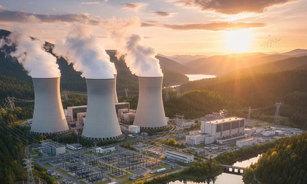

Nuclear power is one of the most powerful and reliable sources of electricity, providing large-scale energy generation without producing carbon dioxide emissions. By splitting atomic nuclei, nuclear power plants release enormous amounts of energy that can be converted into stable and continuous electricity. This makes nuclear energy a cornerstone of Europe’s low-carbon energy strategy, ensuring grid stability while supporting climate goals.
Germany, France, Switzerland, the United Kingdom, Belgium, the Netherlands, Poland, Austria, Norway, and Italy all rely on nuclear power as part of a diversified energy mix. These countries use nuclear facilities to balance intermittent renewable sources like wind and solar, maintain a steady electricity supply, and reduce dependence on fossil fuels. In this context, safety, organization, and operational efficiency are absolutely critical.
Safety and Organization: Industrial Labeling in Nuclear Facilities.
Nuclear power plants handle radioactive materials, high-energy systems, and sensitive equipment, making safety a top priority. Every component—from reactors and turbines to cooling systems, electrical panels, and storage areas—must be clearly marked and documented.
SignXpert provides durable, high-quality signage and labeling solutions tailored for nuclear environments across Germany and Europe. Our engraved plates, pipe markers, technical tags, safety decals, and warning signs help operators quickly identify hazards, understand system flows, and ensure compliance with strict EU safety standards.
By clearly marking high-risk zones, safety equipment, emergency exits, pipes, and valves, SignXpert labeling enhances both personnel safety and operational efficiency. In German, French, Swiss, UK, Belgian, Dutch, Polish, Austrian, Norwegian, and Italian nuclear facilities, structured labeling is essential for maintaining a safe, organized, and compliant working environment.
Maintenance and Long-Term Operations: The Role of Labeling.
Safe and efficient long-term operation of nuclear power plants depends on structured maintenance and clear identification of all technical systems. Labels and signs allow technicians to quickly locate components, identify pipe contents, track electrical panels, and follow operational procedures with precision.
Industrial signage, engraved plates, and durable decals from SignXpert withstand heat, humidity, chemicals, and mechanical stress, ensuring that labeling remains legible even under extreme conditions.
By reducing the risk of errors during inspections, repairs, and routine maintenance, clear labeling contributes directly to safe, reliable, and uninterrupted energy production.
Across Germany, France, Switzerland, the United Kingdom, Belgium, the Netherlands, Poland, Austria, Norway, and Italy, SignXpert supports nuclear operators in implementing labeling strategies that enhance safety, efficiency, and compliance.
Why SignXpert is the Trusted Partner for Nuclear Industry Labeling.
SignXpert is a leading provider of industrial signage, engraved plates, pipe and cable markers, warning signs, technical labels, CE marking plates, and safety decals for nuclear facilities.
Our primary focus is Germany, with fast and reliable delivery across France, Switzerland, the United Kingdom, Belgium, the Netherlands, Poland, Austria, Norway, and Italy.
With our user-friendly online system, nuclear operators can easily customize labeling solutions to meet specific plant requirements.
SignXpert products are designed for extreme durability, combining mechanical strength, corrosion resistance, UV protection, and high contrast readability.
Fast production times ensure that labeling can be implemented without project delays, while competitive pricing allows facilities to access high-quality solutions within budget.
By choosing SignXpert, nuclear power plants gain a reliable partner that enhances safety, streamlines maintenance, supports regulatory compliance, and ensures long-term, secure, and carbon-free energy production across Europe.